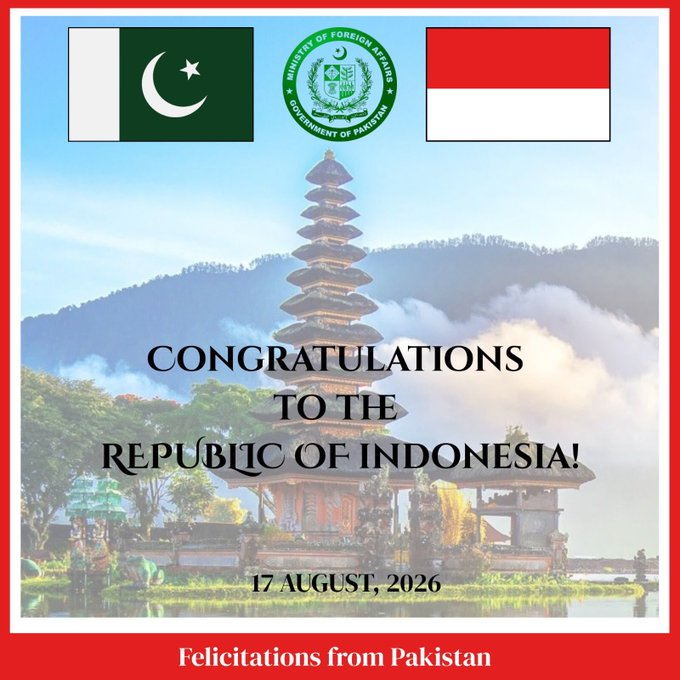

@ForeignOfficePk
📝 原文: Pakistan extends its warmest felicitations to the Government and the people of the Republic of Indonesia.
Happy Independence day!@Kemlu_RI@PakinIndonesia
🇨🇳 译文: 巴基斯坦向印度尼西亚共和国政府和人民致以最热烈的祝贺。
独立日快乐！@Kemlu_RI@PakinIndonesia



🕒 2026-08-17T03:37:52+00:00